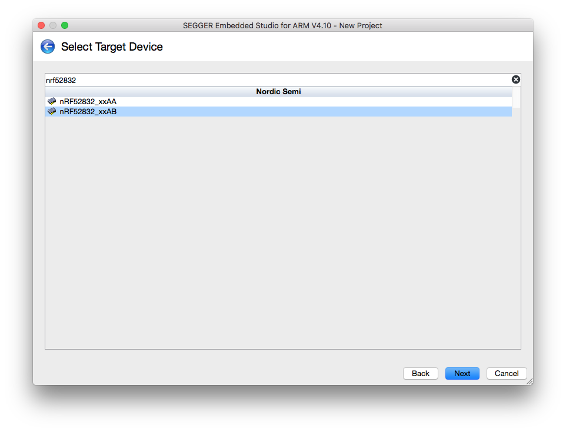
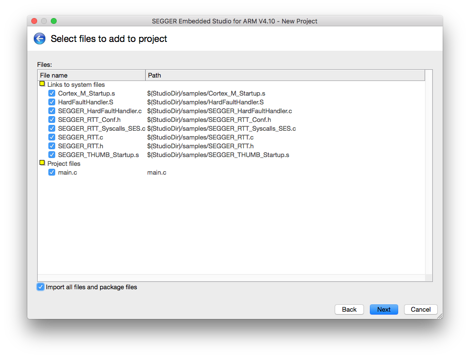
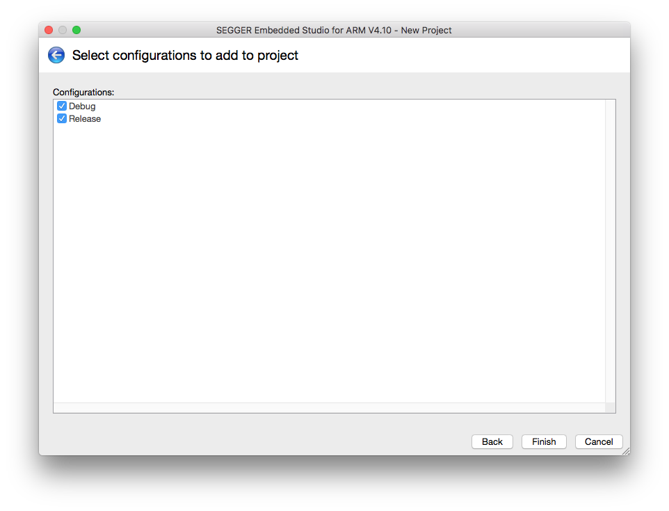
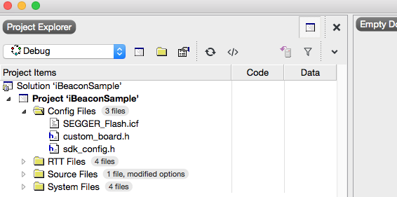

Projectの設定





config用フォルダ作成
Project ExplorerでProjectを選択後、上のMenu BarよりProject -> Add New Folderでフォルダを作成する。名前は何でもOK。(作成しなくても良い)
sdk_config.hの取り込み
(SDK_PATH)/example/ble_peripheral/ble_app_beacon/pca10040/s132/config/sdk_config.hをProject配下に取り込み
custom_board.hの作成
Project配下にcustom_board.hを作成
1 2 3 4 5 6 7 8 9 10 11 12 13 14 15 16 17 18 19 20 21 22 23 24 25 26 27 28 29 30 31 32 33 34 35 36 37 38 39 40 41 42 43 44 45 46 47 48 49 50 51 52 53 54 55 56 57 58 59 60 61 62 63 64 65 66 67 68 69 70 71 72 73 | // Shinobi Dev Board #ifndef CUSTOM_BOARD_H #define CUSTOM_BOARD_H #define LEDS_NUMBER 1 #define LED_1 18 #define LEDS_LIST { LED_1 } #define LEDS_ACTIVE_STATE 1 #define BSP_LED_0 LED_1 #define BUTTONS_NUMBER 1 #define BUTTON_0 16 #define BUTTONS_ACTIVE_STATE 0 #define BSP_BUTTON_0 BUTTON_0 #define BUTTONS_LIST { BUTTON_0 } #define BUTTON_PULL NRF_GPIO_PIN_PULLUP #define LEDS_INV_MASK 0 #define RX_PIN_NUMBER 9 #define TX_PIN_NUMBER 11 #define CTS_PIN_NUMBER 10 #define RTS_PIN_NUMBER 8 #define HWFC false #define SPIS_MISO_PIN 20 // SPI MISO signal. #define SPIS_CSN_PIN 21 // SPI CSN signal. #define SPIS_MOSI_PIN 22 // SPI MOSI signal. #define SPIS_SCK_PIN 23 // SPI SCK signal. #define SPIM0_SCK_PIN 23u /**< SPI clock GPIO pin number. */ #define SPIM0_MOSI_PIN 20u /**< SPI Master Out Slave In GPIO pin number. */ #define SPIM0_MISO_PIN 22u /**< SPI Master In Slave Out GPIO pin number. */ #define SPIM0_SS_PIN 21u /**< SPI Slave Select GPIO pin number. */ #define SPIM1_SCK_PIN 29u /**< SPI clock GPIO pin number. */ #define SPIM1_MOSI_PIN 24u /**< SPI Master Out Slave In GPIO pin number. */ #define SPIM1_MISO_PIN 28u /**< SPI Master In Slave Out GPIO pin number. */ #define SPIM1_SS_PIN 25u /**< SPI Slave Select GPIO pin number. */ // serialization APPLICATION board // UART // this configuration works with the SPI wires setup #define SER_APP_RX_PIN 20 // UART RX pin number. #define SER_APP_TX_PIN 22 // UART TX pin number. #define SER_APP_CTS_PIN 23 // UART Clear To Send pin number. #define SER_APP_RTS_PIN 21 // UART Request To Send pin number. // serialization CONNECTIVITY board // UART #if 0 #define SER_CON_RX_PIN 22 // UART RX pin number. #define SER_CON_TX_PIN 20 // UART TX pin number. #define SER_CON_CTS_PIN 21 // UART Clear To Send pin number. Not used if HWFC is set to false. #define SER_CON_RTS_PIN 23 // UART Request To Send pin number. Not used if HWFC is set to false. #else // this configuration works with the SPI wires setup #define SER_CON_RX_PIN 20 // UART RX pin number. #define SER_CON_TX_PIN 22 // UART TX pin number. #define SER_CON_CTS_PIN 21 // UART Clear To Send pin number. Not used if HWFC is set to false. #define SER_CON_RTS_PIN 23 // UART Request To Send pin number. Not used if HWFC is set to false. #endif #define SER_CONN_ASSERT_LED_PIN LED_0 #define NRF_CLOCK_LFCLKSRC {.source = NRF_CLOCK_LF_SRC_XTAL, \ .rc_ctiv = 0, \ .rc_temp_ctiv = 0, \ .accuracy = NRF_CLOCK_LF_ACCURACY_20_PPM} #endif |
SEGGER_Flash.icfの取り込み
Project Explorer -> Add Existing FileからSEGGER_Flash.icfファイルを取り込み

Build Optionの設定
Project ExplorerでProject選択後、OptionsボタンからOption画面を開く。その後、左上のdrop-down listでPrivate ConfigurationのCommonを選択する
以下のOptionを設定する
Preprocessor -> Preprocessor Definitions
| Option |
|---|
| NRF52832_XXAB |
| BOARD_CUSTOM |